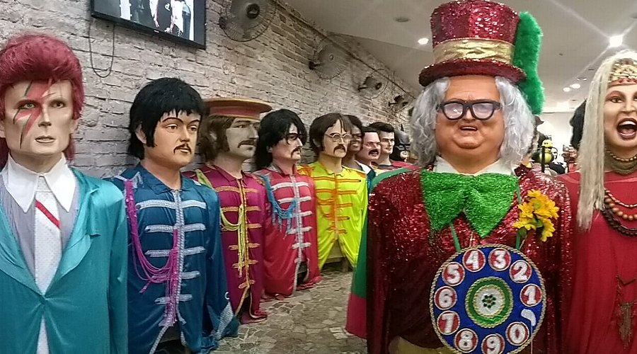

Paço do Frevo
Um lugar dedicado à salvaguarda e celebração do frevo, ritmo considerado Patrimônio Cultural Imaterial da Humanidade. O espaço oferece exposições, atividades interativas e muita história sobre a dança e a música pernambucana.

Embaixada dos Bonecos Gigantes
Aqui ficam expostos os famosos bonecos gigantes que ganham as ruas de Olinda e Recife durante o Carnaval. É possível ver de perto representações de personalidades históricas, artistas, políticos e ícones da cultura pop internacional.
